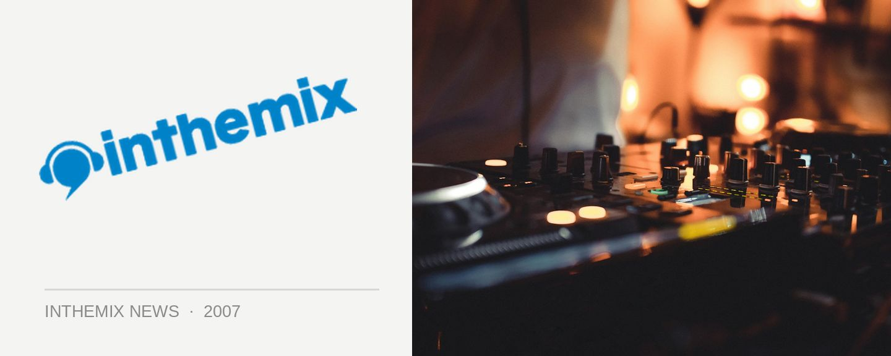

Resin Dogs DJ set for Dust Tones
The next Dust Tones event will be an all-star lineup of breaks and hip hop, with the Resin Dogs heading up a cast of players that is drawn form overseas as well as several states across the country. The Dogs will be joined by WA’s Fdel from Invada Records, The UK’s Feature Cast, Victorian MC A Love with DMC Champion DJ Perplex as well as a bunch of other performers – DJ Skoob, Deejay Mathmatics, Robotek B-Boys, Monsta RoK and ConArtists.
Phew! You need to take a breath after that, it’s about as much breaks and hip hop that anybody could handle.
Dust Tones hits the Factory Theatre on Friday 7th December, tickets are $15 for presale and more on the door.